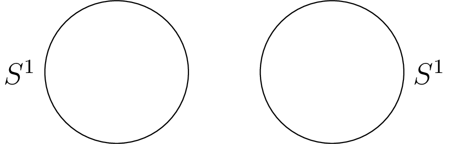
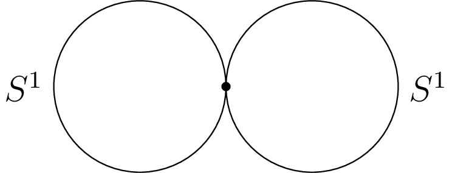
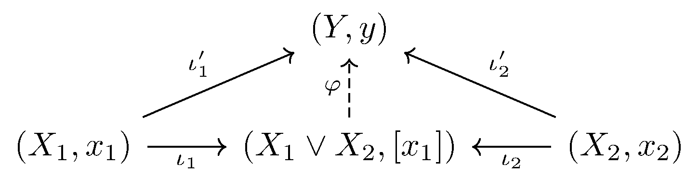

April 29th
Today I learned the definition of the wedge product, from the Napkin . The idea is to take two topological spaces and then "attach'' them at a point. Here's the formal definition.
Definition. Fix topological spaces $X_1$ and $X_2$ with fixed points $x_1\in X_1$ and $x_2\in X_2.$ Then we define the "wedge product'' $X_1\vee X_2$ by \[X_1\vee X_2:=(X_1\sqcup X_2)/(x_1=x_2).\]
Here, $X_1\sqcup X_2$ is the disjoint union of the spaces, meaning that $U\subseteq X_1\sqcup X_2$ is open if and only if its intersections with $X_1$ and $X_2$ are themselves open. Additionally, modding out by the (abuse-of-notation) equivalence relation $x_1=x_2$ means that a set $U\subseteq X$ is open if and only if the union of the equivalence classes of $U$ is open in $X.$
Anyways, the point here is that we use $\sqcup$ to place the two topological spaces (disjointly) and then use the equivalence relation to attach them. As an example, here is a picture of $S^1\sqcup S^1.$

And here is the wedge product $S^1\vee S^1.$

Indeed, we are essentially identifying two points of the two copies of $S^1$ in order to "attach'' them.
It turns out that we can also define the wedge product by universal property. However, we shouldn't define it by universal property in the category of topological spaces $\text{Top}$ because we need to provide a choice of point for our wedge product. So we work in $\text{Top}_*,$ the category of pointed topological spaces, in order to have the choice made for us.
Proposition. The wedge product $\vee:\text{Top}_*\times\text{Top}_*\to\text{Top}_*$ is the coproduct in the category of pointed topological spaces.
For clarity, we say that the morphisms between two pointed spaces $(X_1,x_1)$ and $(X_2,x_2)$ are given by continuous maps $X_1\to X_2$ which send $x_1\mapsto x_2.$
Now, fix two pointed topological spaces $(X_1,x_1)$ and $(X_2,x_2).$ We want to show that $(X_1\vee X_2,[x_1])$ is the coproduct of these pointed spaces. (We are writing $[x_1]$ to mean the equivalence class of $x_1$ under the equivalence relation $x_1=x_2$ used to define $\vee.$) This means that we need to exhibit morphisms\[\begin{cases} \iota_1:(X_1,x_1)\to(X_1\vee X_2,[x_1]), \\ \iota_2:(X_2,x_2)\to(X_1\vee X_2,[x_1]), \\\end{cases}\]such that for any other space pointed space $(Y,y)$ with morphisms $\iota_1'$ from $(X_1,x_1)$ and $\iota_2'$ from $(X_2,x_2),$ these factor uniquely through $\iota_1$ and $\iota_2$ (respectively). That is, the induced arrow $\varphi$ in the following diagram is unique.

For the inclusion morphisms, we essentially do the most natural thing possible: take $x\in X_\bullet$ to its element in $X_1\sqcup X_2$ (the exact way $\sqcup$ is defined doesn't matter as long it is the coproduct in $\text{Set}$) and then take $x$ to its equivalence class in $X_1\vee X_2.$ This embedding is the identity is pretty much the identity, so it is continuous, and it sends\[(x_\bullet\in X_\bullet)\longmapsto(x_\bullet\in X_1\sqcup X_2)\longmapsto([x_\bullet]\in X_1\vee X_2),\]so indeed we are sending the basepoints around correctly. Namely, $x_1,x_2\mapsto[x_1]=[x_2].$
It remains to show the universal property. We begin by showing that the induced arrow $\varphi:(X_1\vee X_2,[x_1])$ is unique by describing what its behavior must do on each point of $X_1\vee X_2,$ and then we show that it exists by showing that the behavior actually gives a well-defined morphism.
Indeed, fix any $[x]\in X_1\vee X_2,$ and select some representative $x\in[x].$ This $x$ lives in $X_1\sqcup X_2,$ so it lives in (exactly) one of $X_1$ or $X_2,$ say $X_\bullet.$ But we know that $x\in X_\bullet$ should go to $\iota_\bullet'(x)\in Y,$ so we have to send\[\varphi:[x]\mapsto\iota_\bullet'(x).\]Thus, the behavior of $\varphi$ is forced. We note that $\varphi$ is a well-defined function because, as long as $[x]\ne[x_1],$ there is only one element in that equivalence class, so there is no danger of assigning multiple elements. On the other hand, if $[x]=[x_1],$ then we may have $x_1,x_2\in[x_1],$ but\[\iota_1'(x_1)=\iota_2'(x_2)=y\]because the $\iota_\bullet'$ are morphisms of pointed spaces. This also shows that $\varphi$ behaves nicely with the basepoints.
It remains to show that $\varphi$ is continuous. Fix $U\subseteq Y$ open. Then $\varphi^{-1}(U)$ is the union of a whole bunch of equivalence classes, more specifically\[\varphi^{-1}(U)=\{[x]:\varphi([x])\in U\}.\]Unravelling the definition $\varphi,$ we see this is\[\varphi^{-1}(U)=\{[x]:x\in X_1\text{ and }\iota_1'(x)\in U\}\cup\{[x]:x\in X_2\text{ and }\iota_2'(x)\in U\}.\]Note the only equivalence class with more than one element is $[x_1],$ and if we have one of $x_1$ in $\iota_1^{-1}(U)$ or $\iota_2^{-1}(U),$ then we have both because $x_1,x_2\mapsto y.$ In particular,\[\varphi^{-1}(U)=\{[x]:x\in\iota_1^{-1}(U)\sqcup\iota_2^{-1}(U)\}\]is indeed open because it contains all elements it represents in equivalence classes, which is enough because then $\iota^{-1}(U)\sqcup\iota_2^{-1}(U)\subseteq X_1\sqcup X_2$ is open because $\iota_\bullet^{-1}(U)$ is open because these inclusions are themselves continuous. This finishes. $\blacksquare$